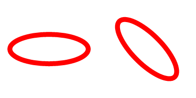

AddPathEllipse()
语法
AddPathEllipse(x.d, y.d, RadiusX.d, RadiusY.d [, StartAngle.d, EndAngle.d [, Flags]])概要
Add an ellipse (or a partial ellipse) to the vector drawing path.
By default, this function ends the current figure in the path and adds the ellipse as an unconnected figure to the path (full ellipses are marked as closed). This behavior can be changed with the appropriate flags.
参数
x.d, y.d Specifies the center point for the ellipse. RadiusX.d, RadiusY.d Specifies the radius for the ellipse in the X and Y direction. StartAngle.d, EndAngle.d (optional) Specifies the angle for start and end of the circle in degrees. The angle 0 marks at the positive X axis. The defaults are 0 and 360 degrees respectively. Flags (optional) This can be a combination of the following values: #PB_Path_Default : No special behavior (default value) #PB_Path_Relative : The positions are relative to the last cursor position. #PB_Path_Connected : The circle is connected to the existing path with a line and not automatically a closed figure. #PB_Path_CounterClockwise : The drawing direction between the start/end angles is counter-clockwise.
返回值
无.
备注
This function draws an ellipse shape with a defined radius at the X and Y axis of the current coordinate system. To draw an ellipse at any rotation, rotate the coordinate system around the ellipse's center point before adding the ellipse as shown in the example below. The current coordinate system can be preserved by using SaveVectorState() and RestoreVectorState().
示例
If OpenWindow(0, 0, 0, 400, 200, "VectorDrawing", #PB_Window_SystemMenu | #PB_Window_ScreenCentered) CanvasGadget(0, 0, 0, 400, 200) If StartVectorDrawing(CanvasVectorOutput(0)) ; regular ellipse AddPathEllipse(100, 100, 80, 30) ; rotated ellipse SaveVectorState() RotateCoordinates(300, 100, 45) AddPathEllipse(300, 100, 80, 30) RestoreVectorState() VectorSourceColor(RGBA(255, 0, 0, 255)) StrokePath(10) StopVectorDrawing() EndIf Repeat Event = WaitWindowEvent() Until Event = #PB_Event_CloseWindow EndIf
参阅
MovePathCursor(), AddPathLine(), AddPathArc(), AddPathBox(), AddPathCircle(), AddPathCurve()
已支持操作系统
所有